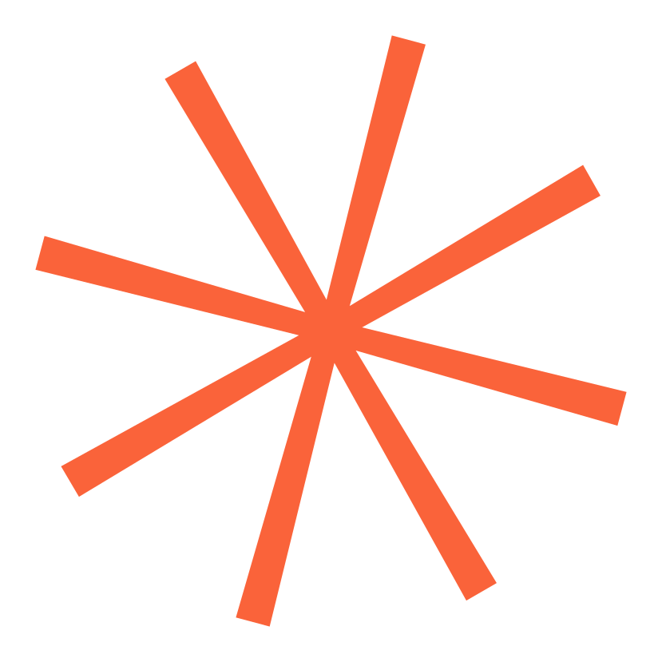

A good place to start.
Editable designs give your next post, presentation, or project a clear starting point, with room to change the words, images, and details to fit your idea.
Browse templates ↗Schmutz makes useful digital things that help people turn an idea into something personal, polished, and ready to share.

THE IDEA
It’s the extra something you bring to an idea: a touch of personality, a bit of flair, a playful detail that makes the result feel like yours.
That idea guides everything here. Schmutz products should be useful first, easy to make your own, and a little more enjoyable to use along the way.
WHAT YOU’LL FIND HERE
Editable designs give your next post, presentation, or project a clear starting point, with room to change the words, images, and details to fit your idea.
Browse templates ↗Practical tools help with everyday creative tasks, from working with files to getting a quick answer. Supported tools run right in your browser.
Explore Schmutz Tools ↗MADE TO GROW
Schmutz isn’t tied to one format or one kind of product. New things can take shape as the ideas come. They’ll belong here if they’re useful, thoughtfully made, and give you room to put your own spin on them.
Make it useful.
Make it yours.